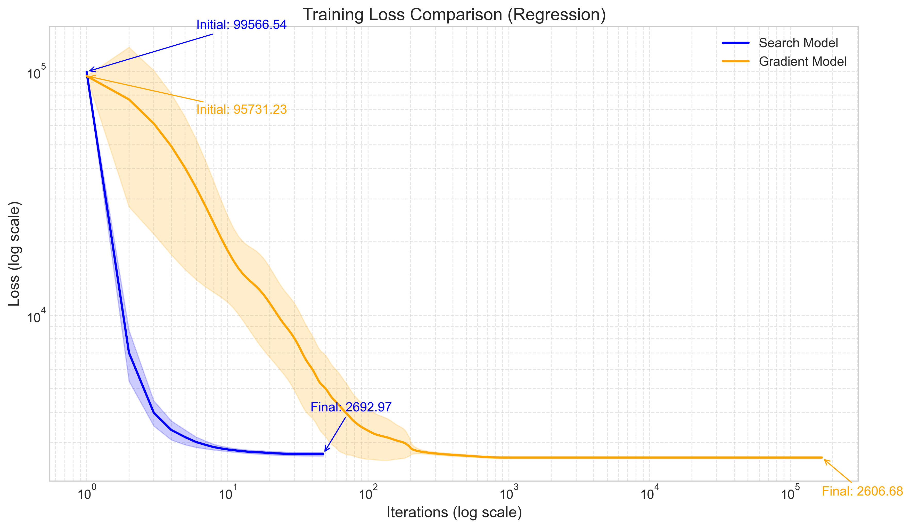
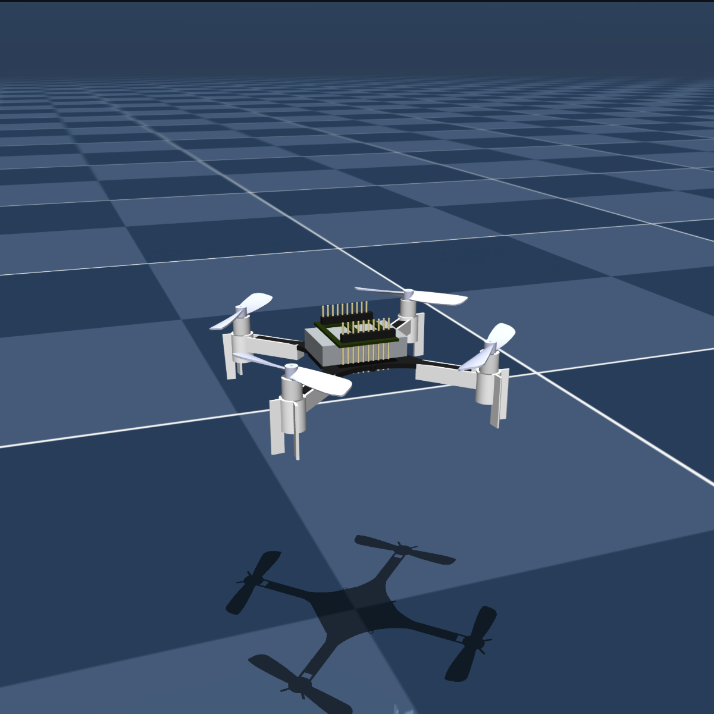
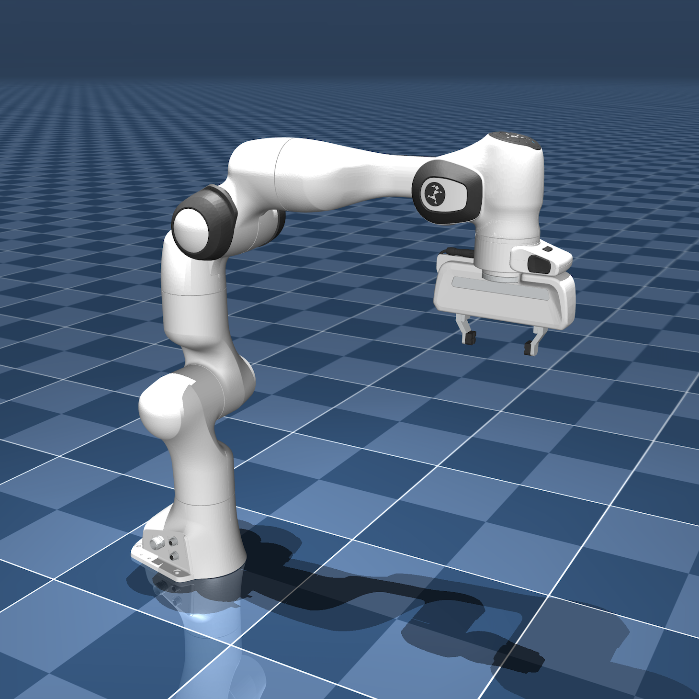
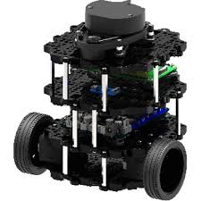
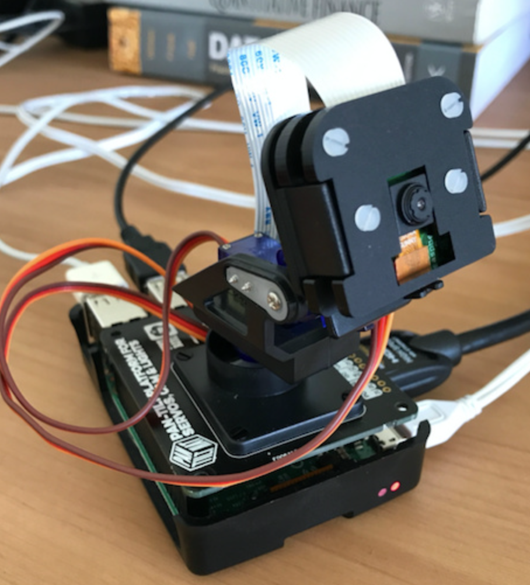
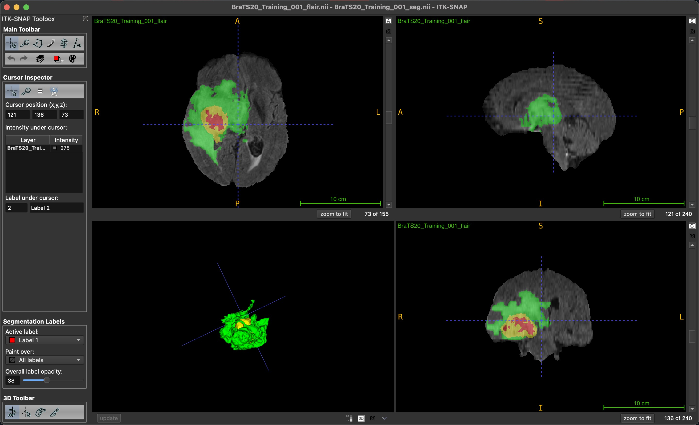
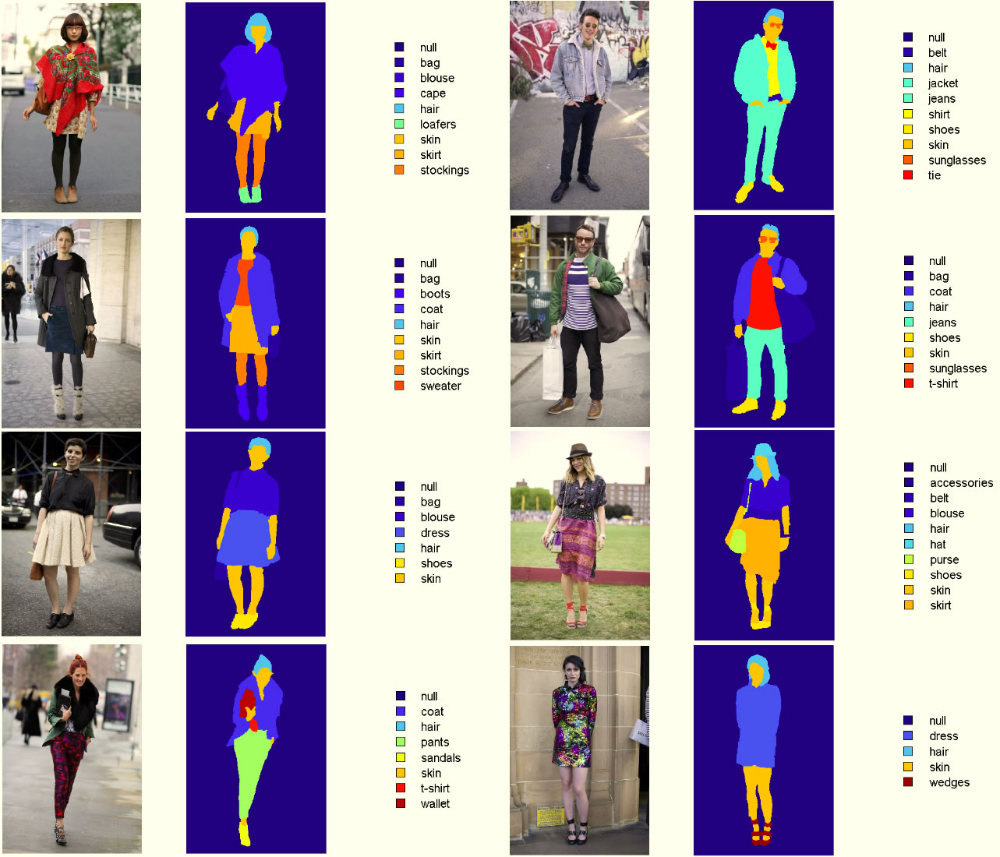
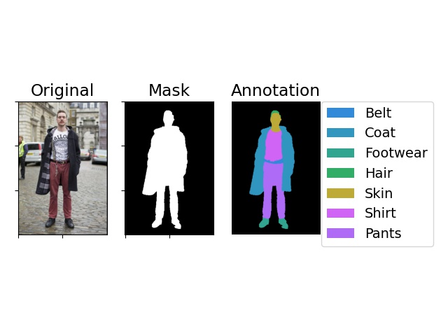

|
Oluwatimilehin Owolabi I'm an undergraduate Electrical Engineering student at Covenant University. I lead the Robotics Research Team for Google Developer Groups on Campus, where we work on reinforcement learning, vision-language-action models, and low-cost robotic systems. Previously, I worked with Dr. Daniel Omeiza at the Oxford Robotics Institute on autonomous driving and graph neural networks. I'm passionate about teaching and mentorship. I currently teach machine learning to undergraduate and graduate women of APWEN. I am the president of the Association of Electrical and Information Engineering Students and I founded the AEIES student mentorship program to help students master engineering concepts from first principles. My vision is to unify machine learning, control theory, and cognitive science to build embodied AI systems that think, remember, and learn continuously. |
{kind=link}
ResearchI'm currently interested in meta-learning for self-improving policies, and learning-based model predictive control for mobility and manipulation in legged and aerial robots. That is, until I understand how to tackle my long-term vision of building truly cognitive systems. |

|
Fuzzy-PID Controller for Liquid Level Control of Tank Systems
Ayokunle Awelewa, Kayode Ojo, Toluwa Abimbola-Oladejo, Timilehin Owolabi, Akshay Saha, Viranjay Srivastava Accepted for presentation at the IEEE International Conference on Science, Engineering and Business for Driving Sustainable Development Goals, 2025 Developed and tested a Fuzzy-PID controller for single- and double-tank liquid level systems, showing improved performance over conventional PID control in handling nonlinearity, uncertainty, and multivariable disturbances. |
|

|
Practical Trade-offs in Neural Network Optimization: Brute Force Search and
Gradient Descent
Tobiloba Emmanuel Somefun, Timilehin Owolabi, Omowunmi Mary Longe Engineering Research Express, 2025 code / PDF This work compares brute force and gradient descent optimization in neural networks, showing that brute force achieves better accuracy and lower memory usage, while gradient descent offers faster convergence—highlighting the potential of hybrid methods for more adaptable and efficient learning. |

|
Enhancing Radiological Imaging for Better Healthcare Outcomes Through High
Performance Hybrid Approach
Olumayowa Idowu, Haoji Hu, Amusa Akinwale, Abolaji Ilori, Zou Xingze, Yubin Wang, Aiyedun Rasheed, Timilehin Owolabi ASRIC Journal on Engineering Sciences, 2024 Developed a hybrid radiological image enhancement technique combining unsharp masking, logarithmic transformation, and adaptive histogram equalization, which outperforms CLAHE and Wavelet-based methods in visual quality metrics—offering a more standardized, accurate, and cost-effective solution for medical imaging systems. |

|
Energy Optimization Algorithm for Reducing Energy Consumption in a Smart
Home
Tobiloba Somefun, Adrian Egbewe Igho-Orere, Comfort Somefun, Nelson Elijah, Timilehin Owolabi, Samson Ongbali ICMEAS, 2023 Developed a smart home automation algorithm that combines appliance scheduling with real-time environmental sensing to optimize electricity use, achieving up to 68% energy savings in simulations—offering a scalable solution for reducing residential energy consumption and promoting smart grid integration. |
ProjectsFew of my projects I'm very passionate about. |
|

|
Coordinated Control of Multi-Quadrotor Swarms
Timilehin Owolabi, Chukwudumebi Chukwuma, Oladele Omogboyega, Ayokunle Awelewa Publishing soon!, 2025 code / PDF Draft Adaptive, optimal, and learning-based control for quadrotor swarms using gym-pybullet-drones. |

|
Autonomous Delivery Drone
Timilehin Owolabi Ongoing code Currently implementing Gaussian Process Model Predictive Control. |

|
Affordable 3D-Printed Manipulator with Comparable Performance to WidowX 250
S
Timilehin Owolabi*, Victor Oduopara, Ayotomiwa Oyewumi, Isaac Odejimi, Omeyimi Mustapha, Queendolin Etta, Chukwudumebi Chukwuma, Jomiloju Olubosi, Duru Somtochukwu Ongoing code *Project Lead. All authors were affiliated with Google Developer Groups on Campus, Covenant University. A low-cost, 6-DOF 3D-printed robotic arm designed to rival the performance of commercial manipulators like the WidowX 250 S—achieving similar reach, repeatability, and payload handling at just 2.5% of the cost. Fully open-source and built for accessible research, education, and prototyping. |
|

|
VisionPick: Learning Visual Pick-and-Place with JAX and MuJoCo
Timilehin Owolabi*, Omeyimi Mustapha, Ayotomiwa Oyewumi, Jomiloju Olubosi, Duru Somtochukwu Ongoing code *Project Lead. All authors were affiliated with Google Developer Groups on Campus, Covenant University. Vision-based manipulation policy using the DeepMind Control Suite, MuJoCo Playground, and JAX to enable reliable pick-and-place performance in simulation. The system learns to detect and lift boxes autonomously, laying a foundation for scalable robotic manipulation with minimal supervision. |
|

|
TurtleBot
Timilehin Owolabi 2024 code Simulates a TurtleBot in Gazebo with precise motion control via PID and robust localization using an Extended Kalman Filter, all built on the ROS 2 ecosystem. |
|

|
CamAI: Real-Time Action Recognition and Emergency Alerts
Timilehin Owolabi, Nelson Elijah, Jesse-Paul Osemeke 2023 code CamAI is an AI-powered camera system that tracks people, recognizes actions in real time, and sends alerts during emergencies. Whether it's boosting safety in traffic zones, securing infrastructure, or enhancing agricultural efficiency, CamAI turns passive monitoring into intelligent response. |
|

|
3D Brain Tumor Segmentation
Timilehin Owolabi*, Collins Olawale, Ikeoluwa Ibitoye 2023 code / blog *Led during internship at Zummit Africa. All authors were affiliated with Zummit Africa. A U-Net-based deep learning app for segmenting brain tumors (necrotic, edema, enhancing) in 3D MRI scans. Uses FLAIR and T1CE images, with a FastAPI backend and Streamlit frontend for easy interaction and visualization. |
|


|
ClothSegNet: Semantic Segmentation of Clothing via U-Net
Timilehin Owolabi 2023 code A deep learning project that uses a U-Net model to segment clothing items from images of people. Whether it's shirts, pants, or mystery fashion choices, ClothSegNet finds the boundaries so your model doesn't have to guess where the pants end and the fashion crimes begin. |
Miscellanea |
Invited Talks |
AI: Our Current Reality and Future Trajectory, Nigerian Society of Engineers (NSE), 2024 Deep Learning: Neural Networks, Association of Professional Women Engineers of Nigeria (APWEN), 2024 |
Teaching |
Machine Learning Tutor,
Association of Professional Women Engineers of Nigeria, (2024-Present)
Robotics Instructor, Whitesands School, 2024 |
|
Website template from here. |